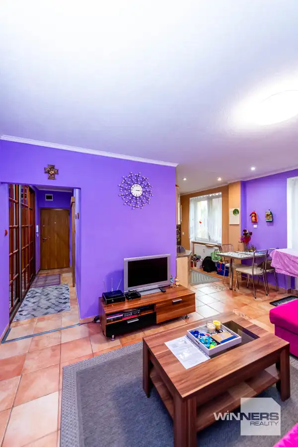
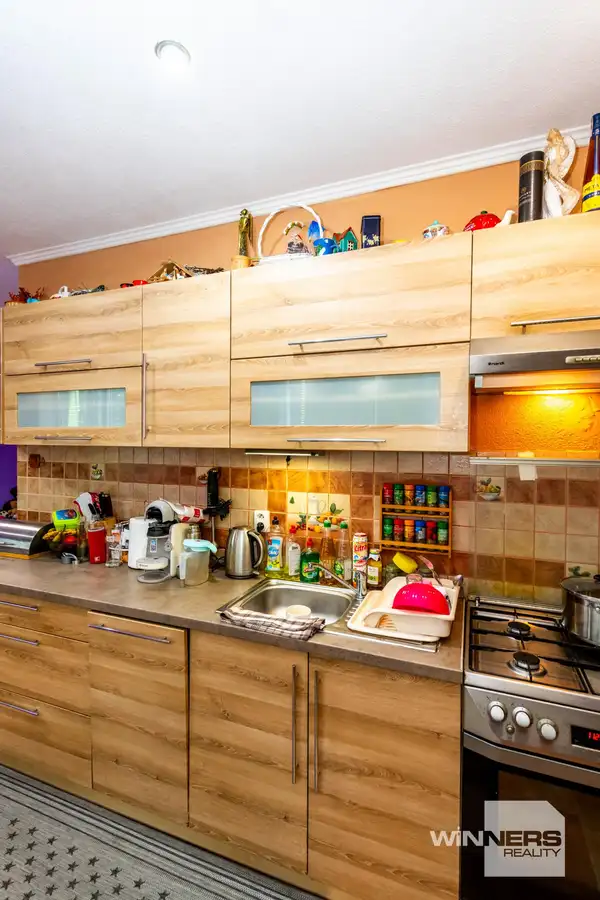
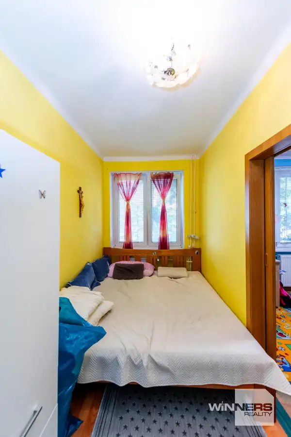
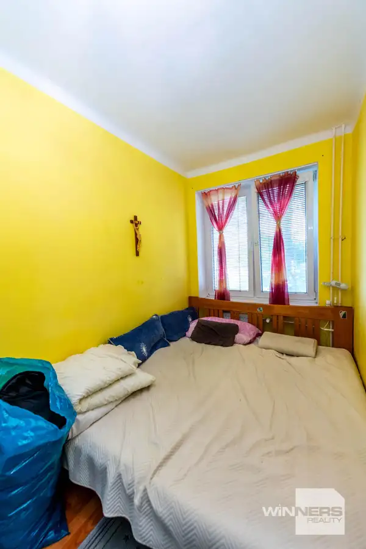
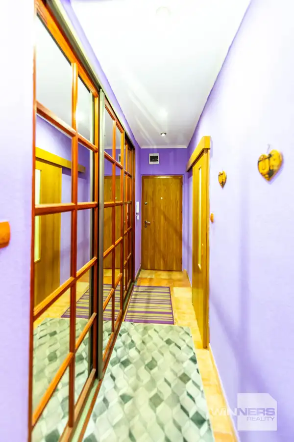
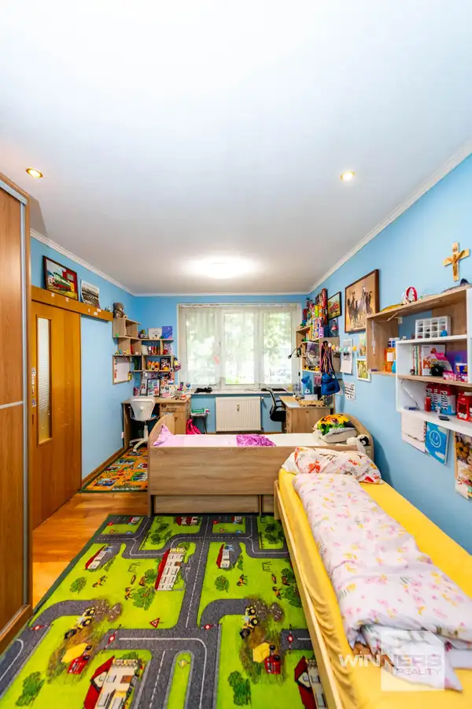

PONÚKAME NA PREDAJ: Priestranný 3-izbový byt v srdci Humenného (Vihorlatská ul.)
Humenné







- Dispozícia3-izbový
- Plocha63 m²
- StavČiastočná rekonštrukcia
- VlastníctvoOsobné
O nehnuteľnosti
Hľadáte bývanie v absolútnom centre mesta, no zároveň túžite po tichu a pokoji? Tento byt na Vihorlatskej ulici spája to najlepšie z oboch svetov. Nachádza sa na bočnej ulici, ktorá vás dokonale odizoluje od mestského ruchu, no kaviareň, obchody či úrady máte doslova pár krokov od vchodu.Byt je nezariadený, vďaka čomu si ho môžete okamžite dozariaďovať podľa vlastného vkusu bez nutnosti vyhadzovať starý nábytok.Základné informácie:Lokalita: Humenné – Vihorlatská ulica (centrum mesta, bočná a tichá ulička)Úžitková plocha: 63 m²Dispozícia: 3x obytná izba, kuchyňa, chodba, kúpeľňa, WCStav: Staršia rekonštrukcia (plne funkčný a obývateľný stav, prípadne ideálny základ pre modernizáciu podľa vlastných predstáv)Občianska vybavenosť v pešej dostupnosti:Školy, škôlky, obchody, reštaurácie, pošta, banky, zdravotné strediská a zastávky MHD – všetko do pár minút pešo.Cena: 122 900 € (vrátane kompletného právneho servisu)Kontakt: Katarína Kapraľová Winners Reality 0905 510 550 E-mail: katarina.kapralova@winnersgroup.sk Táto inzercia nie je verejnou ponukou na uzavretie zmluvy. Vlastník si vyhradzuje právo voľby o tom, komu a za akých dojednaných podmienok prevedie svoje vlastnícke právo. Pri tejto ponuke je možné licitovať kúpnu cenu podľa všeobecných podmienok licitácie v sieti Winners reality uverejnených na: www.winnersreality.sk/licitacia.
Parametre
- Cena vrátane energií
- Nie
- Druh
- 3 izbový byt
- Dátum zverejnenia
- 25. 06. 2026
- Počet izieb / miestností
- 3
- Stav nehnuteľnosti
- Čiastočná rekonštrukcia
- Typ
- Predaj
- Vlastníctvo
- Osobné
- Zariadenie
- Zariadené kompletne
- Úžitková plocha
- 63 m²